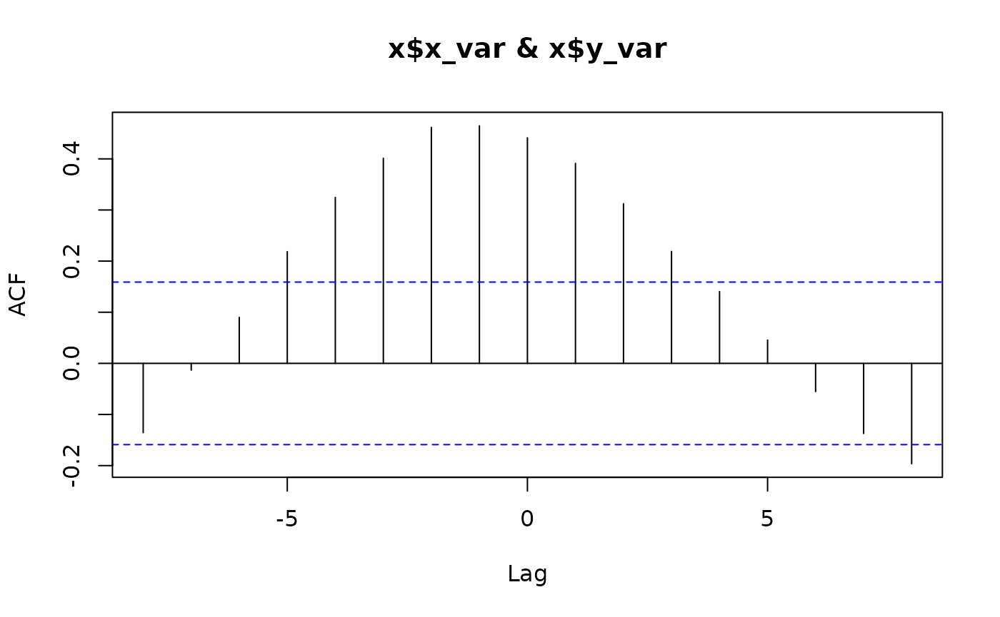
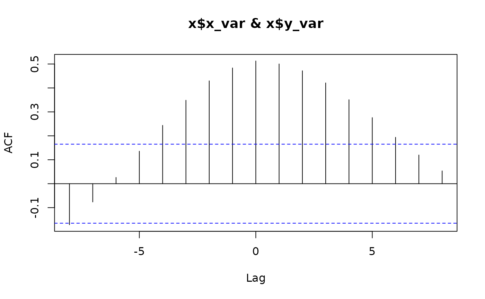
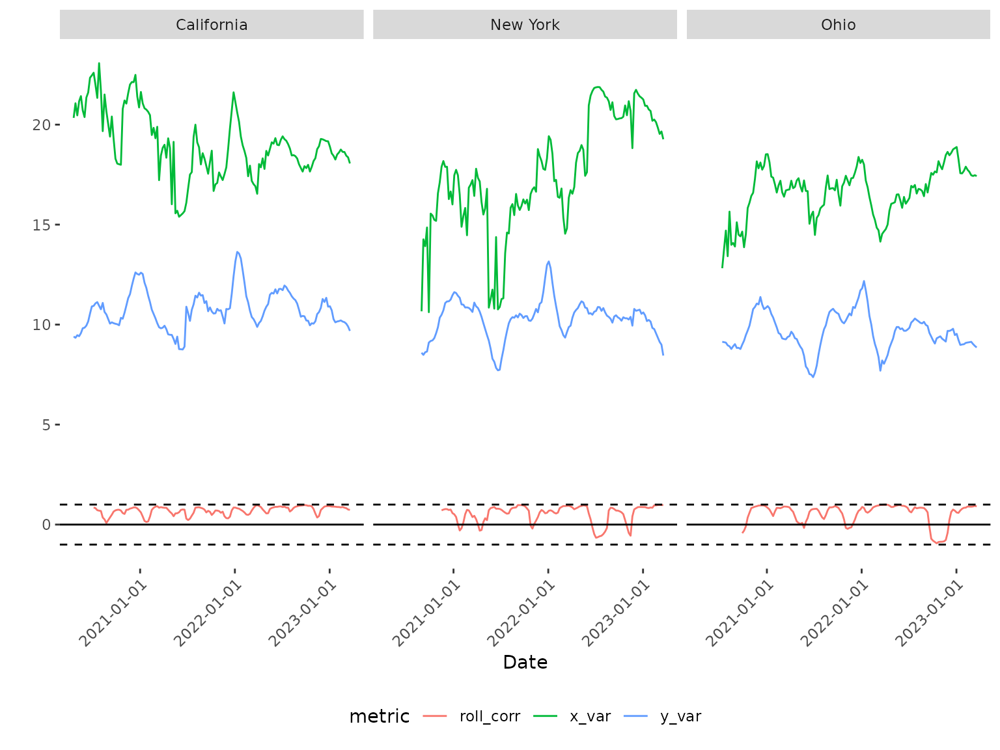
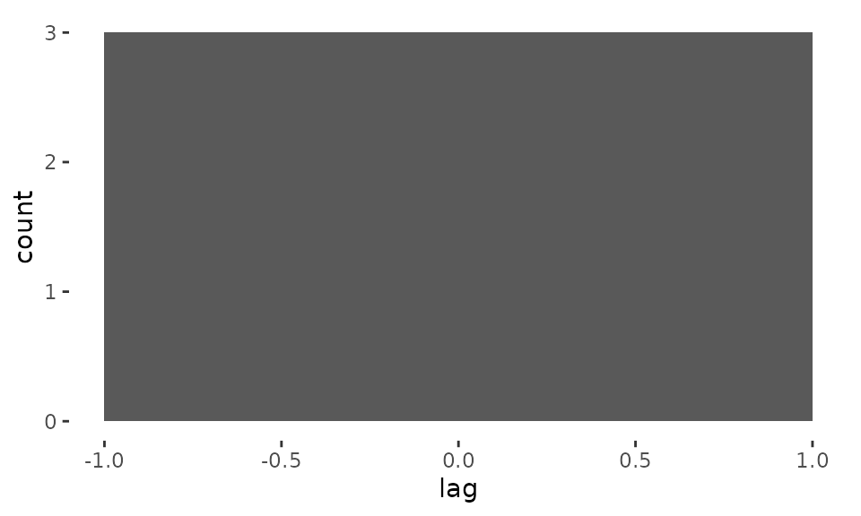

pika answers two questions about a pair of time series,
optionally repeated across a grouping variable (e.g. region): at what
lag are they most strongly correlated, and how does that correlation
change over time? This page is a fast tour of the core functions on the
data bundled with the package. For two full worked examples with real
data and discussion, see the case studies:
vignette("china-mobility-rt") and
vignette("wastewater-surveillance").
Lag and rolling correlation
pika bundles weekly SARS-CoV-2 wastewater concentration
and COVID-19 case counts for three US states
(wastewater_data and covid_case_data). Joining
them gives a pair of time series per state.
library(dplyr)
library(pika)
data(wastewater_data)
data(covid_case_data)
dat <- inner_join(wastewater_data, covid_case_data, by = c("state", "date")) %>%
mutate(log_conc = log(conc), log_cases = log(cases + 1))cross_corr() finds the lag (in rows of your data – here,
weeks) at which two variables are most strongly correlated, separately
for each level of grp_var:
lags <- cross_corr(
dat = dat, date_var = "date", grp_var = "state",
x_var = "log_conc", y_var = "log_cases", max_lag = 8
)


lags
#> # A tibble: 3 × 2
#> state lag
#> <chr> <dbl>
#> 1 California -1
#> 2 New York 0
#> 3 Ohio 0rolling_corr() then calculates the correlation between
the two variables in a moving window, so you can see whether that
relationship is stable over time rather than assuming a single
lag/correlation applies throughout:
dat_corr <- rolling_corr(
dat = dat, date_var = "date", grp_var = "state",
x_var = "log_conc", y_var = "log_cases", n = 12
)
tail(dat_corr, 3)
#> # A tibble: 3 × 9
#> state date conc n_sites n_samples cases log_conc log_cases roll_corr
#> <chr> <date> <dbl> <int> <int> <dbl> <dbl> <dbl> <dbl>
#> 1 Ohio 2023-03-06 3.72e7 71 138 8332 17.4 9.03 0.907
#> 2 Ohio 2023-03-13 3.87e7 71 139 7586 17.5 8.93 0.942
#> 3 Ohio 2023-03-20 3.70e7 71 136 7016 17.4 8.86 0.906plot_corr() visualizes both series alongside the rolling
correlation, faceted by group:
plot_corr(
dat = dat_corr, date_var = "date", grp_var = "state",
x_var = "log_conc", y_var = "log_cases"
)
plot_lag() plots a histogram of the lags returned by
cross_corr() across groups, which is more useful with many
groups than the three shown here:
plot_lag(dat = lags, lag_var = "lag")
Other functions
calc_percent_change() converts a count variable into
percent change relative to the average value in a baseline period:
pct <- calc_percent_change(
dat = wastewater_data, date_var = "date", grp_var = "state",
count_var = "conc", n_baseline_periods = 4
)
tail(pct, 3)
#> state date conc n_sites n_samples perc_change
#> 428 Ohio 2023-03-13 38665603 71 139 NA
#> 429 Ohio 2023-03-20 37030318 71 136 NA
#> 430 Ohio 2023-03-27 27581399 69 81 NAestimate_rt() wraps EpiEstim::estimate_R()
to estimate the effective reproduction number (Rt) from case or death
counts, by group:
data(china_case_data)
rt <- estimate_rt(
dat = china_case_data, grp_var = "province",
date_var = "date", incidence_var = "cases"
)
tail(rt, 3)
#> date_start date_end province r_mean r_q2.5 r_q97.5 r_median
#> 432 2020-03-16 2020-03-22 Hong_Kong_SAR 3.263403 2.791268 3.771887 3.257007
#> 433 2020-03-17 2020-03-23 Hong_Kong_SAR 3.080868 2.668662 3.522245 3.075735
#> 434 2020-03-18 2020-03-24 Hong_Kong_SAR 2.720479 2.372844 3.091530 2.716358Learn more
For a full worked example that estimates Rt and determines its lagged
relationship with mobility, reproducing published results, see
vignette("china-mobility-rt"). For an example that tests
whether wastewater surveillance is a reliable leading indicator for
clinical case counts, see
vignette("wastewater-surveillance").